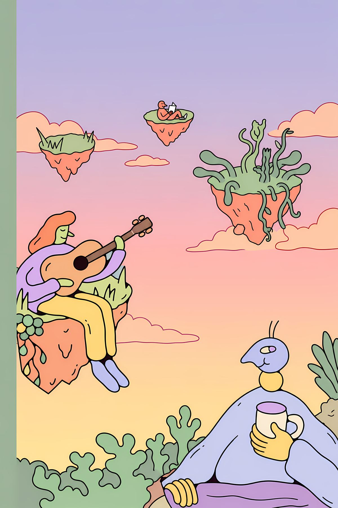
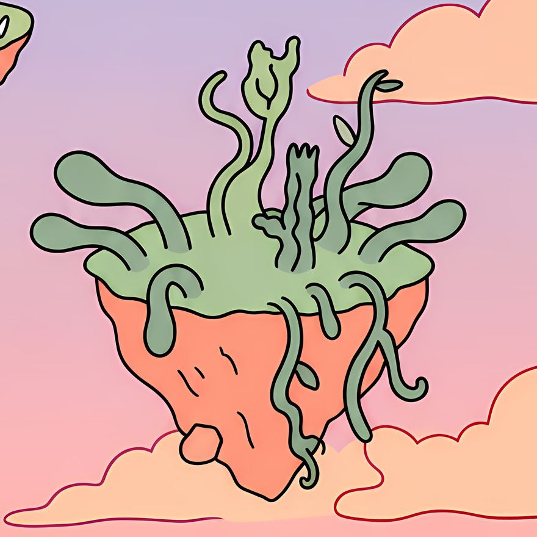

The Creators Lab 01 cover, in detail
Four floating islands, a guitarist, a reader and a creature with a mug: a closer look at Joe Taylor’s cover for our first issue.

The cover of Creators Lab 01 is by Joe Taylor, the Berlin-based British illustrator and animator.[2][1] It is a single scene, drawn in his usual thick, even line and flat colour, and it rewards a slow look.
Read it from the top
The sky fades from lavender at the top to peach and then pale yellow near the ground, like the last ten minutes of a summer evening. Four islands float in it, each with a flat green top and a jagged underside, as if they had been pulled out of the ground like teeth.
On the smallest island, near the centre, a tiny figure lies back and reads. To the right, a larger island sprouts long green plants that curl over its edges like tentacles. Lower down, a red-haired figure in a lavender jumper sits on a rock and plays an acoustic guitar, eyes closed.
In the foreground, a lavender creature with a long nose and two thin antennae holds a mug in a yellow hand, surrounded by soft green plants. It looks perfectly at home.


Why it is the first cover
Creators Lab is about people who make things: in a lab, in a studio, behind a pair of turntables. Joe’s scene has all three moods in it: someone studying, someone playing, someone simply watching with a warm drink. His animated work, for clients including Apple, Netflix and TED-Ed, rarely sits still.[1][3] On paper, he gave us a world that does, for a moment.
Read our profile of the artist: Joe Taylor’s soft, strange worlds.
[ Sources and notes ]
- [ 1 ]Joe Taylor, Vinyl Moon, 2026.
- [ 2 ]About, Joe Taylor.
- [ 3 ]Director and animator Joe Taylor signs to NOMINT roster, Stash Magazine, 14 June 2022.
Researched and drafted with AI tools; fact-checked and edited by Creators Lab editors. How we use AI · Report an error